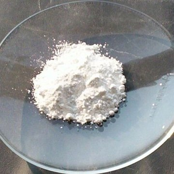
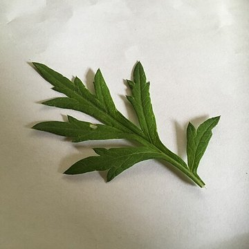

KEM BÔI DA ELEMIS

Tuýp 30g115.000đ
Từ sơ sinhGIẢI QUYẾT VẤN ĐỀ GÌ CHO BÉ
Hăm da (vùng tã, nếp gấp)Rôm sảy, mụn nhọtMẩn ngứa nhiều, da nhạy cảm (bé từ 6 tháng)Chàm sữaMuỗi đốt, côn trùng cắnVết thâm, sẹo mới sau khi da đã lànhDa tay khô rát do rửa tay nhiều
THÀNH PHẦN → GIÚP GÌ CHO BÉ

Kẽm oxyd nano 2%
Như một lớp “áo mưa” mỏng cho da. Tạo màng mỏng phủ da, không cho nước tiểu, phân, độ ướt của tã ngấm vào; ở ngấn cổ, nách thì hai mặt da trơn hơn, bớt cọ xát; khi ra ngoài thì hạn chế gió hanh tác động trực tiếp.
Rau má (asiaticoside, acid asiatic)
Bớt đỏ, bớt rát — và giúp da mau liền. Làm dịu phản ứng kích ứng của da; giúp da tạo tế bào mới và sợi collagen (chất giúp da liền, chắc) → chỗ nứt, trầy, bong tróc liền lại; hỗ trợ làm mờ thâm, sẹo còn mới.

Tinh dầu ngải cứu
Mát dịu khi thoa, hỗ trợ kháng khuẩn ở chỗ da đang trầy, chỗ bé gãi.

Aquaxyl (chiết từ đường thực vật)
Giúp da tự giữ nước bên trong — da mềm, không nứt. Vì sao vừa “chắn ẩm” vừa “giữ ẩm”? Kẽm oxyd chắn cái ướt bẩn bên ngoài; Aquaxyl giữ nước sạch của chính làn da ở bên trong.
★ ĐIỂM MẠNH KHI KHÁCH SO SÁNH
Điểm mạnh: một tuýp làm 3 việc — chắn (kẽm oxyd) + làm dịu, giúp da liền (rau má) + giữ ẩm (Aquaxyl). Là loại duy nhất trong ba kem công bố dùng cho da bị bỏng do gió, nắng.
So với Bepanthen Balm, Sudocrem: Bepanthen (dexpanthenol, lanolin) mạnh về dưỡng, phục hồi da khô — đừng chê, nhưng không có lớp chắn kẽm oxyd. Sudocrem có kẽm oxyd giống Elemis nhưng không có rau má, ngải cứu, Aquaxyl.
Nói với khách: “Kem này vừa tạo lớp chắn như Sudocrem, vừa có rau má làm dịu đỏ rát, lại giúp da giữ ẩm — mẹ không cần mua 2–3 loại riêng.”
Lưu ý: tính theo gam, Elemis đắt hơn cả hai → bán bằng “một tuýp làm nhiều việc”, không nói “mạnh hơn / tốt hơn”. Kem chưa công bố chỉ số chống nắng → không giới thiệu là kem chống nắng.
CÁCH DÙNG: Rửa → thấm khô → thoa lớp mỏng phủ kín, ngày 2–3 lần. Vùng tã: thoa mỗi lần thay tã, kể cả khi da chưa đỏ.
TỪ KEM BÔI ELEMIS → COMBO THEO VẤN ĐỀ DA
Khách hỏi mua Kem bôi Elemis → hỏi thêm vấn đề của bé → gợi ý combo đúng vấn đề đó.
1Hăm da (vùng tã, nếp gấp)Kem bôi Elemis + Tắm gội Elemis265.000đ
2Rôm sảy, mụn nhọtKem bôi Elemis + Tắm gội Elemis265.000đ
3Mẩn ngứa nhiều, da nhạy cảm (bé từ 6 tháng)Kem bôi Elemis + Elemis Gold335.000đ
4Chàm sữaKem bôi Elemis + Tắm gội Elemis + Dầu Oriky400.000đ
5Muỗi đốt, côn trùng cắnKem bôi Elemis + Xịt muỗi Elemis205.000đ
6Vết thâm, sẹo mới sau khi da đã lànhKem bôi Elemis + Dầu Oriky250.000đ
7Da tay khô rát do rửa tay nhiềuKem bôi Elemis + Bọt rửa tay Elemis360.000đ
1Hăm da (vùng tã, nếp gấp)
Hỏi: “Bé nhà mình có hay bị đỏ vùng mặc tã, hay ở ngấn cổ, nách không chị?”
+
Cả bộ 265.000đtắm 200ml
- Kem bôi Elemis: Lớp “áo mưa” kẽm oxyd chắn nước tiểu, phân; rau má làm dịu đỏ rát; Aquaxyl giữ ẩm để da không nứt.
- Tắm gội Elemis: Làm sạch vùng tã, nếp gấp không cần kỳ cọ; hỗ trợ giảm vi khuẩn để chỗ đỏ không nổi mụn mủ; khử mùi mồ hôi.
- + Dầu Oriky (khuyến nghị thêm): Sau khi hết hăm: bù lớp dầu tự nhiên, da không khô bong — hăm khó quay lại.
“Chỗ hăm đang đỏ thì mẹ đừng kỳ cọ — tắm bằng Elemis cho sạch, thấm khô rồi thoa kem tạo lớp chắn. Hai món đi cùng nhau thì vùng tã vừa sạch vừa được che chắn.”
Cách dùng: Tắm: pha 1ml : 1 lít nước, mở nếp gấp rửa kỹ, lau thật khô. Thay tã (nhất là khi đi nặng): rửa bằng chậu nhỏ pha cùng tỉ lệ (VD 2ml : 2 lít). Kem: lớp mỏng phủ kín — vùng tã mỗi lần thay tã, vùng ngấn 2–3 lần/ngày.
⚠ Khuyên đi khám khi: Da trợt, chảy dịch, mụn mủ, mùi hôi, lan nhanh; bé sốt, quấy nhiều; mảng đỏ tươi có chấm đỏ nhỏ xung quanh (nghi nấm — kem kẽm không xử lý được nấm).
2Rôm sảy, mụn nhọt
Hỏi: “Trời nóng bé có hay nổi rôm ở cổ, lưng không chị?”
+Cả bộ 265.000đtắm 200ml
- Kem bôi Elemis: Chấm lên nốt đã nổi: rau má làm dịu đỏ, ngải cứu hỗ trợ kháng khuẩn chỗ bé gãi; Aquaxyl giữ ẩm cho bớt ngứa.
- Tắm gội Elemis: Men đu đủ thông lỗ chân lông (gốc của rôm); sài đất làm dịu nốt; 5 thảo dược hỗ trợ giảm vi khuẩn để nốt rôm không thành mụn nhọt.
“Rôm là do lỗ chân lông bị bít. Mẹ tắm nước thảo dược này cho thông thoáng, bé mát; nốt nào bé gãi đỏ thì chấm kem cho dịu, đỡ nhiễm khuẩn thành mụn.”
Cách dùng: Tắm: pha 5ml : 5 lít nước 36–37°C, không tráng lại. Chỗ rôm, mụn nhiều: xoa trực tiếp Elemis lên vùng da đó 1–2 phút rồi mới tắm. Kem: lớp mỏng 2–3 lần/ngày lên nốt.
⏳ Hai tài liệu công ty hướng dẫn khác nhau cho ca rôm sảy (pha đậm 1ml + 10ml thấm 10–20 phút / xoa trực tiếp 1–2 phút). Kit đang dùng cách của bộ slide — chờ công ty chốt.
⚠ Khuyên đi khám khi: Nốt có mủ, chảy dịch; nhọt sưng to, nóng, mọc thành cụm; mẩn lan nhanh toàn thân; bé sốt kèm nổi ban. Không tự nặn.